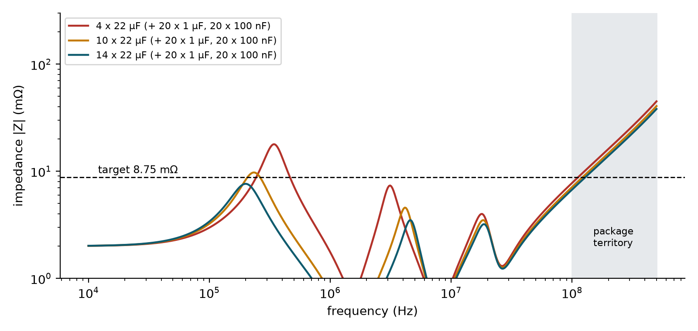

Chapter 13: Power: Clean, Steady Voltage for Twenty Chips¶
Memory chips draw sudden gulps of current. The module must convert the motherboard's 12 V into precise low voltages and keep them steady during every gulp. This chapter follows the power from the edge connector: the power-management chip that makes four voltages from 12 V, the budget of currents and watts under the data-sheet limits (with an open problem that the numbers revealed), and the capacitors that act as small local water tanks. A worked analysis of the power-delivery network shows how many capacitors are enough, and why.
13.1 The power tree¶
A DDR5 module carries its own power-management IC (PMIC), which moved onto the DIMM with DDR5. In the project it is the Richtek RTQ5119A, which has four switching regulators and three small linear regulators and is about 90 per cent efficient. It takes 12 V from the slot (the bulk input, with 3.3 V for management) and produces the voltages the chips need.
| Output | Voltage | Current limit | What it powers |
|---|---|---|---|
| VDD | 1.1 V | up to 7 A (two regulators working together) | The chip core |
| VDDQ | 1.1 V | 3.5 A | The data pins and the RCD |
| VPP | 1.8 V | 3.5 A | The pumps that drive the wordlines |
VPP is higher than the core voltage because the wordline must be driven well above the supply to switch the access transistor on fully.
13.2 The current budget¶
Using the data sheets' worst-case currents, the project tabulated what each rail draws in three states and the total power of the module.
| State | VDD | VDDQ | VPP | Module power |
|---|---|---|---|---|
| Idle | 1.5 A | 1.8 A | 0.2 A | 4.5 W |
| Reading flat out | 4.3 A | 4.6 A | 0.2 A | 11.4 W |
| Writing flat out | 5.1 A | 5.6 A | 0.5 A | 14.1 W |
Example 13.1: From currents to module power
The module power is the output power of the three rails divided by the PMIC's efficiency (about 0.9).
For writing flat out:
- VDD: \(5.1\ \text{A} \times 1.1\ \text{V} = 5.61\) W.
- VDDQ: \(5.6 \times 1.1 = 6.16\) W.
- VPP: \(0.5 \times 1.8 = 0.90\) W.
- Sum \(= 12.67\) W at the outputs. Divide by 0.9: \(12.67/0.9 = 14.1\) W, matching the table.
For idle: \(1.5 \times 1.1 + 1.8 \times 1.1 + 0.2 \times 1.8 = 3.99\) W, and \(3.99/0.9 = 4.43\) W, which matches 4.5 W within rounding. For reading: \(4.3 \times 1.1 + 4.6 \times 1.1 + 0.2 \times 1.8 = 10.15\) W, and \(10.15/0.9 = 11.3\) W against 11.4 W in the table, again within the rounding of the currents.
At 12 V the writing state draws about \(14.1/12 = 1.2\) A from the slot.
An open problem, found by the numbers
At the data sheet's maximum currents, VDDQ needs about 5.6 A, but its regulator is rated 3.5 A: 60 per cent more than the PMIC can supply (\(5.6/3.5 = 1.6\)). The reading state (4.6 A) also exceeds it. Real modules ship with this kind of PMIC, so typical currents must be much lower than the worst-case maximums. Resolving the question needs the vendor's typical-current data or a bigger PMIC. The project keeps a test that fails on purpose until this is fixed, so that the problem cannot be forgotten.
This is a good example of a design review turning a spreadsheet into a question. A maximum-current figure on a data sheet is a limit, not a typical value, and designing to the limit can over-constrain a design while ignoring the limit can under-design it. The honest answer is "not resolved yet", and the project says so.
13.3 Decoupling: capacitors as water tanks¶
The power chip is too slow to react to a gulp of current lasting nanoseconds. So the board places capacitors everywhere: small local tanks that cover the gulp until the regulator catches up. Big capacitors handle slow changes, and small ones handle fast changes.
Engineers check the impedance of the power network seen by the chip across frequency. If the chip suddenly draws an extra current \(\Delta I\) and the network has impedance \(Z\) at that frequency, the supply dips by \(\Delta I \cdot Z\). To keep the dip within an allowed ripple \(\Delta V\), the impedance must stay below the target
at every frequency for which the board is responsible. In the project the target is 8.75 mΩ (3 per cent ripple at a 50 per cent load step). For the 1.1 V rail, 3 per cent is 33 mV, so the target corresponds to a load step of \(33\ \text{mV}/8.75\ \text{m}\Omega \approx 3.8\) A.
The course's model describes each capacitor as a capacitance in series with a resistance (ESR) and an inductance (ESL), and the PMIC as 2 mΩ in series with 3 nH. The parameters used are:
| Capacitor | Effective capacitance | ESR | ESL |
|---|---|---|---|
| 22 µF bulk | 60 per cent of 22 µF | 3 mΩ | 0.8 nH |
| 1 µF | 70 per cent of 1 µF | 10 mΩ | 0.6 nH |
| 100 nF | 80 per cent of 100 nF | 30 mΩ | 0.5 nH |
The reduction of the effective capacitance reflects the way real capacitors lose capacitance under bias. The model adds the admittances (the reciprocals of the impedances) of all parallel branches, inverts the sum, and checks the impedance up to 100 MHz; above that the package takes over.
Example 13.2: How many 22 µF capacitors?
With 20 capacitors of 1 µF and 20 of 100 nF fixed, vary the number of 22 µF capacitors. The worst impedance below 100 MHz, from the model above, is:
| 22 µF capacitors | Worst impedance (mΩ) | At frequency | Against 8.75 mΩ |
|---|---|---|---|
| 0 | 79.5 | 738 kHz | fail |
| 4 | 17.9 | 346 kHz | fail |
| 8 | 11.4 | 257 kHz | fail |
| 10 | 9.7 | 237 kHz | fail |
| 12 | 8.5 | 213 kHz | pass |
| 14 | 7.6 | 201 kHz | pass |
| 16 | 6.9 | 186 kHz | pass |
Ten fail and twelve pass. The project uses 14, which gives \((8.75 - 7.63)/8.75 = 12.8\) per cent margin, "about 13 per cent". The first design had only 4 large capacitors on VDD, and the analysis showed the impedance peaking above the target at a few hundred kilohertz, the caution this table shows. The fix was 14 × 22 µF.

In Figure 13.1 the peak near 200 to 350 kHz is the one that matters: it appears where the regulator's inductance meets the capacitance of the bulk capacitors (a parallel resonance), and only enough bulk capacitance pushes it below the target. The lower peaks at several MHz belong to the smaller capacitors.
13.4 Summary¶
- One PMIC makes VDD (1.1 V, up to 7 A), VDDQ (1.1 V, 3.5 A) and VPP (1.8 V, 3.5 A) from 12 V at about 90 per cent efficiency.
- Worst-case module power is 4.5 W idle, 11.4 W reading and 14.1 W writing; these follow from the rail currents divided by the efficiency.
- VDDQ's worst-case 5.6 A exceeds its 3.5 A regulator: an open problem left visible by a deliberately failing test.
- Decoupling capacitors serve as local tanks. The target impedance is \(\Delta V/\Delta I\); for this module it is 8.75 mΩ, which needs 12 or more of the 22 µF capacitors (the project uses 14).
13.5 Exercises¶
Exercise 13.1. Compute the module power when reading flat out, given currents 4.3 A (VDD), 4.6 A (VDDQ) and 0.2 A (VPP) and an efficiency of 0.9. Compare it with the table.
Answer
Output power \(= 4.3 \times 1.1 + 4.6 \times 1.1 + 0.2 \times 1.8 = 4.73 + 5.06 + 0.36 = 10.15\) W. Input power \(= 10.15/0.9 = 11.28\) W, against 11.4 W in the table: the 1 per cent difference comes from the rounding of the currents.
Exercise 13.2. A different rail has a ripple allowance of 5 per cent on 1.1 V and must tolerate a 4 A load step. What target impedance does it need?
Answer
\(\Delta V = 0.05 \times 1.1 = 55\) mV, so \(Z_{target} = 0.055/4 = 13.75\) mΩ.
Exercise 13.3. The VDDQ regulator is rated 3.5 A. By how much does the data sheet's worst-case current exceed the rating when reading (4.6 A) and when writing (5.6 A)?
Answer
Reading: \(4.6 - 3.5 = 1.1\) A over, or 31 per cent above the rating (\(4.6/3.5 = 1.31\)). Writing: \(5.6 - 3.5 = 2.1\) A over, or 60 per cent above the rating. Idle (1.8 A) is within the rating.
Exercise 13.4. Why is the worst-case impedance peak in Figure 13.1 at a few hundred kilohertz and not at several megahertz?
Answer
At low frequency the regulator's inductance (3 nH and its small resistance) resonates against the capacitance of the bulk capacitors, and with too few bulk capacitors the resonance rises above the target. Higher peaks at MHz frequencies are formed by the smaller capacitors' ESL and capacitance, and these are less critical because many capacitors of those values are in parallel.
Exercise 13.5 (Assignment 9: size the decoupling capacitors). Model each capacitor as \(C\) + ESR + ESL in series, and the PMIC as 2 mΩ + 3 nH. Add 20 × 1 µF and 20 × 100 nF, then vary the number of 22 µF capacitors. Plot \(|Z|\) from 10 kHz to 100 MHz against the 8.75 mΩ target.
Answer
import numpy as np
CAPS = { # (effective C, ESR, ESL)
"bulk": (22e-6 * 0.6, 0.003, 0.8e-9),
"mid": (1e-6 * 0.7, 0.010, 0.6e-9),
"hf": (100e-9 * 0.8, 0.030, 0.5e-9),
}
def z_abs(f, n):
w = 2 * np.pi * f
y = 1 / (0.002 + 1j * w * 3e-9) # PMIC branch
y += 1j * w * 0.9e-9 # fixed small capacitance in the course model
for name, count in n.items():
c, esr, esl = CAPS[name]
y += count / (esr + 1j * (w * esl - 1 / (w * c)))
return 1 / abs(y)
f = np.logspace(4, 8, 400)
for nb in (10, 12, 14):
worst = max(z_abs(x, {"bulk": nb, "mid": 20, "hf": 20}) for x in f)
print(nb, round(worst * 1000, 2), "mOhm", "pass" if worst <= 8.75e-3 else "fail")